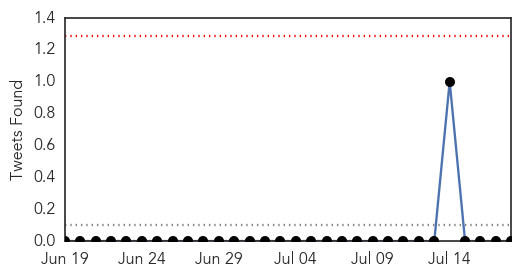

Swine Flu
30-Day Web Trend
6 alerts, 3 warnings

30-Day Twitter Trend
0 alerts, 0 warnings

Article Locations
Article Confidences

Top Articles:
Top Tweets:
-
No tweets found for Jul 18, 2014
Chikungunya
30-Day Web Trend
3 alerts, 0 warnings
30-Day Twitter Trend
2 alerts, 0 warnings

Article Locations
Article Confidences
Top Articles:
- 1.000
- Texas Has Five Cases of Chikungunya
- 1.000
- Florida man first to get chikungunya in the US
- 1.000
- For the first time, Florida mosquitoes are spreading a virus that has been tearing through the Caribbean
- 0.999
- Locally transmitted chikungunya virus detected in U.S.
- 0.999
- Mosquitoes spreading chikungunya virus brought home by US travellers
- 0.999
- First Locally Acquired Case of Chikunguyna Reported in Florida
- 0.999
- Threat rises in U.S. from mosquito-borne chikungunya virus
- 0.999
- Puerto Rico health officials declare chikungunya epidemic as virus spreads in Caribbean
- 0.999
- US reports first locally acquired chikungunya cases
- 0.999
- Chikungunya cases hit nearly 200 in Puerto Rico, 2 in Florida
- 0.999
- First 'locally acquired' case of chikungunya reported in U.S.
- 0.998
- It's Here: First Local Chikungunya Cases in Florida - WRCBtv.com
- 0.998
- 1st case of Chikungunya transmitted in US found in Florida
- 0.998
- Chikungunya virus transmission occurs in Florida for the first time
- 0.998
- First chikungunya cases acquired in the U.S. reported
- 0.998
- Md. health officials monitoring for mosquito-borne chikungunya virus after Fla. case reported
- 0.998
- Debilitating case of mosquito-borne chikungunya reported in U.S.
- 0.998
- Exotic mosquito-borne virus makes US premiere, infects 2 in Florida — RT USA
- 0.997
- Six more chikungunya cases reported in Indiana
- 0.997
- Florida resident gets chikungunya infection without traveling abroad
- 0.997
- US Witnesses First Case of Chikungunya Fever
- 0.996
- Untitled Article
- 0.996
- What the Heck Is Chikungunya?
- 0.995
- Chikungunya Virus Spreading in US
- 0.995
- Indiana Residents Test Positive for Painful Mosquito Virus
- 0.994
- Chikungunya virus contracted in U.S. for first time
- 0.994
- First U.S. Chikungunya Virus Infections Take Hold
- 0.991
- Reports profile Caribbean chikungunya threat to Europe
- 0.989
- First cases of painful mosquito-borne virus confirmed to have been contracted in the US
- 0.989
- First cases of painful mosquito-borne virus confirmed to have been contracted in the US
- 0.988
- Six More Hoosiers Test Positive For Chikungunya Virus
- 0.988
- First Chikungunya Contracted in U.S.
- 0.984
- Puerto Rico declares chikungunya epidemic
- 0.979
- Maryland health officials warn against West Nile, new virus
- 0.978
- Puerto Rico Declares Chikungunya Epidemic
- 0.973
- South Florida Sees the First Local Cases of the Mosquito Virus Chikungunya
- 0.961
- Residents Concerned About Mosquito-Borne Chikungunya Virus « CBS Miami
- 0.959
- Another case of chikungunya confirmed in Manatee County
- 0.959
- What is chikungunya and why should I want to know?: What they're saying
- 0.931
- Chikungunya Virus Moves Into US
- 0.882
- NC health officials urge vigilance for mosquitoes
- 0.872
- Campers take precautions against new mosquito-borne virus :: WRAL.com
- 0.849
- Douglas County confirms first case of chikungunya
- 0.558
- YOUR DAILY WEEKLY READER: AIDS crash, reef acids and Republican rape-mongers
Top Tweets:
-
No tweets found for Jul 18, 2014